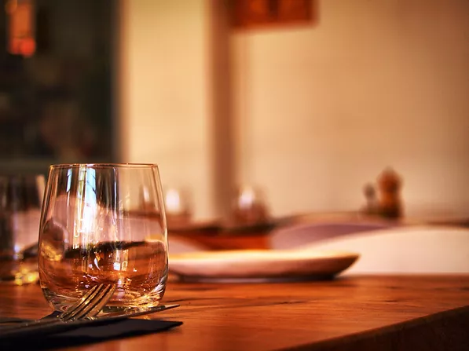

The Restaurant
Welcome to our cosy french restaurant located in the historic
old post office in Devonport. We offer a high standard bistro cuisine with
seasonal, fresh and local products.
The chef combines côte d'Azur influences with fine dining skills
he gained from prestigious restaurants around the world.